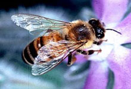
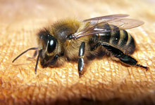
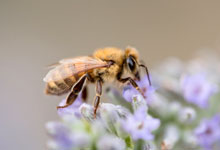

Nos ruches et abeilles
Présentation des ruches
La ruche chalet est appréciée en montagne, mais aussi en plaine grâce à un design atypique qui, en plus d'être très esthétique, protège la colonie des intempéries. Son petit toit chalet évacue facilement eau et neige et offre une faible prise au vent, l'auvent évite les infiltrations d'eau dans la ruche et les pieds isolent la structure du sol. Grâce à ces accessoires, la ruche est confortable et saine !
Outre les avantages incontestables détaillés plus haut, cette ruche de montagne est livrée avec corps et hausse de ruche (équipée de crémaillères et bandes intercadre), fond en bois plein et toit chalet. En cohérence absolue avec cet aspect authentique, l'ensemble des éléments de ruche sont en bois.

Nos abeilles
L'apis mellifera mellifera: De couleur noire, on la trouve souvent en France, on la dénomme d'ailleurs souvent « abeille locale ». Il s'agit d'une abeille rustique qui hiberne bien sous nos hivers froids. Peu sensible aux maladies, par contre elle peut être agressive et souvent essaimeuse.
L'apis mellifera ligustica: Elle est de couleur jaune. Bonne productrice grâce à un bon couvain, plutôt douce. Elle est toutefois plus sensible aux grands froids. On la trouve principalement en Italie et maintenant en Australie, Nouvelle-Zélande. Elle se multiplie très bien et permet de produite des essaims en quantité.
L'apis mellifera iberiensis : De couleur noire, on la trouve surtout en Espagne, Portugal, Gibraltar. Produit beaucoup de propolis. Plutôt agressive.
L'apis mellifera caucasica : Abeille orientale, de grande taille, couleur grise, très douce mais sujette à l'essaimage. Très rustique, elle propolise beaucoup. Elle est très présente sur le pourtour de la mer noire